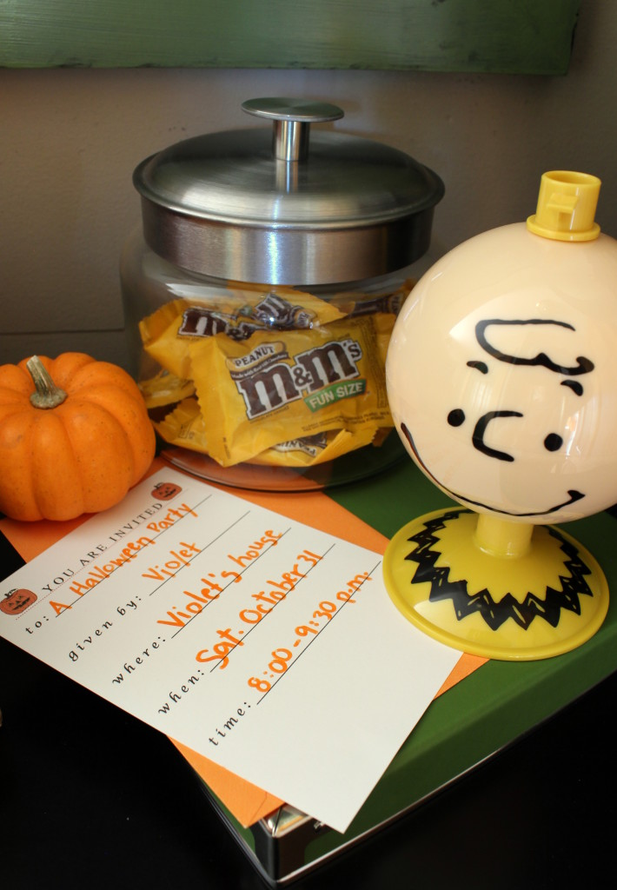

.png)
.PNG)
.PNG)
.PNG)
.PNG)
.PNG)
.JPG)
.JPG)
.PNG)
.PNG)


Do you remember in my first fall decorating post here this month I mentioned that I had planned all the details for several Halloween decorating and party themes but abandoned them because they were just tooooo scary? Well, there was one theme that I really liked, and it wasn’t too scary at all. 🙂
When I was growing up, there was always a Charlie Brown television special a few nights before a major holiday. It’s the Great Pumpkin, Charlie Brown first aired on CBS October 27, 1966 when I was in elementary school. I always liked those Peanuts gang specials because they were connected to a holiday (often one with a vacation from school! 🙂 ) and the music was catchy.
I think I even liked the plots of the stories as a child, but our children have not been enamored with them at all. They don’t have a nostalgic connection to them, and they say they are depressing. 🙁 As I have watched them as an adult, I do think that poor old Charlie Brown is bullied by Lucy and some of the others. But…that has not stopped me from using a few of the items and ideas from the Halloween special to decorate our playroom.
 I started with the small chalkboard with Linus’ Welcome Great Pumpkin sign along with a number of pumpkins, a jar of Halloween candy, a Charlie Brown dry erase memo head, (available here), and an invitation for Charlie Brown to Violet’s Halloween party. Do you remember that scene?
I started with the small chalkboard with Linus’ Welcome Great Pumpkin sign along with a number of pumpkins, a jar of Halloween candy, a Charlie Brown dry erase memo head, (available here), and an invitation for Charlie Brown to Violet’s Halloween party. Do you remember that scene?
A big jar of popcorn and a small jar of pumpkin candy was added to the end table for snacking while we watch the movie. (I had to move the wicker chair in order to photograph the chest and chalkboard better.)
On the large chalkboard is Linus’ letter to the Great Pumpkin,
a number of pumpkins (from the pumpkin patch where Linus and Sally waited for the Great Pumpkin 🙂 )…
and a paper trick-or-treat sack with Charlie Brown’s sad, “I got a rock.”
Did you know that after the first It’s a Great Pumpkin special aired, bags and boxes of candy “just for Charlie Brown” poured into the network, television stations, and to the author? I guess everyone felt sorry that he only got rocks for Halloween!
But there will be no rocks for trick-or-treaters here, nor at our children’s homes. To make sure of this, I have filled orange felt bags with Halloween candy to mail to each of them. It’s not all for them to eat. No, I am sending a note with each of the bags that this is for them to use for trick-or-treaters that visit their apartment. (Of course they can eat the leftovers. 🙂 )
I made the tags by typing up a simple Happy Halloween message and adding a silhouette of either Snoopy or Charlie Brown to the card.
The bags are currently hanging on the hooks in the hallway where we normally hang bookbags… and stockings at Christmas. I figure if Christmas can take over those hooks in December, then bags of candy can take them over in October. 🙂
The last room that we are going to take a peak in today is my workroom, right off the hall with the pumpkin colored bags of candy.
It’s been awhile since we have been in this room. I have painted the wicker chairs red!
(Surprise, surprise!)
There are more pumpkins in this room as well…
and a little Halloween vignette on the cabinet countertop.
I wanted to put a tag on that jar of candy orange slices and call them “pumpkin brains” or something scary like that, but I haven’t had a chance to get that done. (I love that photo of our children as Harry Potter and a very snaggle toothed witch!)
More pumpkins and mums..
And that brings us to the end of the fall tour of the rooms in the house.
But we still have the outside to tour. 🙂
Before I run off, I wanted to make sure you knew about the new Peanuts movie that will be out in theaters November 6.
I think something good is finally in store for Charlie Brown and the little red headed girl in this movie.
What do you think?
Until next time…


.PNG)
Absolutely adorable! Thanks for the inspiration!
——————————————————————–
You are welcome Sherri! I’m so happy you found inspiration in the post. 🙂
Kelly
How perfect! Charlie Brown!! I don’t always watch the cartoons every year– but will watch parts– my favorite part is when he says, ” I GOT A ROCK!” Always makes me chuckle!!:) but I would have never thought to put a rock in a bag!! What a funny idea!! Love it! This post was so cheery and unique– I like how you think. When do you get all these different ideas? Do you have a notebook that you jot down when the light bulb goes on? Keep up the great posts– we love them!!:)
———————————————————————–
Poor Charlie Brown with his rocks! 🙁 When do I get all these ideas? Sometimes when I am watching the show (like the detail of the invitation to Violet’s party) and other times from something on pinterest that I tweak to fit what I am doing, and yes, I most definitely keep a notebook with lists of ideas and shopping lists. I HAVE to write things down to remember them! 🙂
Kelly
I m sure your children will be happy with the felt bags of sweets you’re sending them … you’re such a thoughtful mum! I smiled when I saw the mini packs of peanut m&m s in one of your jars as I was eating some as your email arrived in my inbox!!! I used to see Charlie Brown and Peanut cartoons in a newspaper but I don’t remember them on TV .. maybe they weren’t on in the Uk ….
Your workroom is looking great .. so neat and organised. Fancy you painting the chairs red!!! 🙂
Rosemary
——————————————————————-
That’s a shame you did not have the Peanuts specials in the UK. You need to rent them from Netflix just so you can see what they were like!
Glad you like the workroom. Yes, imagine that…I painted those chairs red! 🙂
Kelly
Your decorating has reminded me of the Charlie Brown and gang cut out cookies my grandmother used to make……now I need to see if my mom has those cookie cutters! I noticed you moved the wicker couch to the play room….wasn’t that on the porch? 🙂 I can’t wait to see what you have done to your porch! I have a porch that I love as well but really have not done anything for fall out there….I need a day to catch up to finish my fall decorating you are an inspiration!
———————————————————————–
How wonderful! I would love to make some of those! Don’t get excited about the furniture. Our daughter has “borrowed” the sofa that was in the playroom for her apartment, and the porch’s wicker sofa took its place in the playroom. I had a loveseat in my classroom that came to take the place of the sofa on the porch. Got all that? LOL So it was all moved out of necessity. I hope to get the porch post out either late tomorrow or on Friday morning. Hope you will like the fall decor in it. 🙂
Kelly
Kelly,
I always loved the Charlie Brown specials on tv. I guess they are a little sad but they were always so fun to watch.
Everything looks so festive and pretty. Great job as always. I wanted to reach in and grab a few of the sugared orange jelly candies!
xo,
Karen
———————————————————————–
Thank you Karen. I keep raiding that jar of orange candy and can’t stop! They will be gone in a day or two. (Addictive!)
Kelly
This was just the MOST enjoyable post. Love your creativity and talent. Thanks for the tour. Happy Halloween.
——————————————————————-
Thank you for stopping by Mary Ann! I’m so glad you enjoyed it. 🙂 Happy Halloween too!
Kelly
p.s. Would have loved to have seen you performing at your class reunion. Too funny!
I just love your photos of your home–I enjoy every single detail! I also grew up watching the Peanuts “specials”, they became a treasured tradition with my own sons, & now my grandsons pile on my lap to watch them. Last year while watching the Thanksgiving show,hearing the giggles of my sweet, little guys watching the antics of Snoopy & Woodstock was PRICELESS! Such fun!
———————————————————————
You are lucky that your little ones enjoy the shows. All my kids did was groan and say, “Nooooo…do we have to watch that again?” I have told them that they HAVE to go see the movie when it comes out. Charlie Brown gets to finally have his day in this one. 🙂
Kelly
I love all the Peanut’s movies too! They were so special, because we only got to watch them once a year, just like “The Wizard of Oz” and “The Ten Commandments”. Simpler times! My son just tried out for “Charlie Brown Christmas” this evening. He wanted to come home and watch the movie, but I said, we need to watch “The Great Pumpkin” first! LOL I don’t always get to respond to your post, but just know that every time I open up my email and see something from you, it’s like taking a mini-vacation. The places you go are so beautiful and your house is beautifully decorated. I just love it!!! Thanks for all your posts!!!
——————————————————————–
I hope your son gets his part Rhonda. 🙂 Best wishes to him!
Thank you for the sweet comment about the blog and the house. I am happy that you enjoy it all. Thank YOU for reading!
Kelly
I love this post. Your house looks so festive and I just can’t get over the red and orange together. You always make me want to clean and decorate! What a sweet idea those trick or treat bags are for your almost grown children!
———————————————————————-
Clean and decorate…that is exactly how I do it Kathy! LOL It will be interesting to see exactly how much of the candy gets given away and how much they eat themselves. I am really curious about our son in Seattle who has lost 70 something lbs. and has had a personal trainer for over a year. I might need to add some granola bars in his. 🙂
Kelly
Absolutely the BEST. Love Charlie Brown and the gang !. I always think it’s just not Christmas until Linus tells us what Christmas is all about. And yes, the Great Pumpkin is coming ! Beautiful decor as always, thanks for sharing your HOME with us
——————————————————————–
Gosh thank you Debbie! You are right about it not being Christmas witout a Charlie Brown Christmas. 🙂 I’m so glad you enjoy the posts here and the decor of the house.
Kelly
Where did you get the clear glass canister’s with the pretty red lids?
I enjoy all your holiday décor and especially love your sense of style – your home is very inviting and seems comfortable!
Laura
———————————————————————
The jars are the Montana glass jars from Target http://www.target.com/p/montana-glass-jar-with-silver-lid-1-5-gal/-/A-10620262#prodSlot=medium_2_9&term=glass+jar . I just painted the lids red with Valspar (from Lowes) paint in Cherry Red (but now only carried in Cut Ruby.) Thank you for the compliments on the house! 🙂
Kelly
Have so enjoyed the autumn tour of your beautiful home! Also enjoyed my armchair travels with y’all when you took your son to Yale. I forwarded your posts to my brother, who lives in Maine, and he was very familiar with the areas you covered there. He and his wife loved your blog!
Just wanted to make sure you knew about Vince Guaraldi’s album (or CD) of Christmas music, “A Charlie Brown Christmas”, mentioned by another reader. It’s my favorite holiday recording, and several of the songs are not specific to Christmas, but are good year-’round. I suspect you have that collection already, but didn’t want to take it for granted and have you miss out.
Many thanks for the happy “getaway” moments you provide us all!
———————————————————————-
Well I am so glad you have enjoyed the tour Ruth! Thank you for sharing your blog love with your brother and his wife. I imagine they would recognize a lot of the area.
Yes, I have the cd of the Charlie Brown Christmas. It is such a good one! Thank you for thinking of me with your recommendation. 🙂
Kelly
The Great Pumpkin is on his way! Everything looks wonderful—love the red chairs and files. Now I need candy.
xo, lissy
———————————————————————-
Yes, he is indeed! Thank you for the compliments on the fall decorating here. I can’t wait to decorate the workroom with its red chairs for Christmas!
Candy is always a good idea. 🙂
Kelly
Oh, I love the Charlie Brown theme!! I loved the specials and always looked forward to them. The music can’t be beat. 🙂 I had to chuckle when I read, “I got a rock.” 😀 I can just hear him saying it. What cute little bags full of candy in your hallway. And I love your freshly painted red chairs. So fitting for you. 😉
———————————————————————-
I think a lot of us are nostalgic when it comes to those Peanuts specials. You are so right about the music! Thank you for the kind comments on the decorating and the red chairs.
Hope you are having a good week!
Kelly
Kelly, just adorable and so much fun. Love your wicker chairs (both the green and the red). Are they old, new? Just when did you start with holiday decorating? Was it a tradition in your childhood home? The only decorating we did was the Christmas tree and actually my mom did that because she didn’t want us to “mess it up,” had to put those silver icicles on one at a time. Maybe you addressed that question in an earlier post. If so, please direct me. Your home is so lovely. How’s your son doing at school?
——————————————————————–
I’m so glad you liked the Charlie Brown decorating. We’ve had the chairs a number of years, but they are not antiques.
I think I started doing the seasonal decor when our children were young…wanting it to be special for them. We would set up hay bales with a scarecrow and pumpkins in our front yard for fall and do an Easter egg tree for Easter. I have always always done Christmas decor from as far back as I can remember. Growing up I remember having a tree, a wreath, and a nativity…maybe a centerpiece on the dining room table. When we do the icicles, we just grab a few from the box and blow them up in the air to see where they land on the tree! (Not a very “professional” way to do it! 🙂 )
Our Yale son is doing fine, but he said it is nonstop work and very little time for anything other than that. I don’t think he was expecting it to be quite that much work. He has been out of college for a couple of years and must not remember what that was like! Thank you for asking.
Kelly
Oh Kelly, this is the PERFECT theme….I may steal it for next year!! My grandson, Landon, adores Its the Great Pumpkin Charlie Brown. One of our favorite sayings is “I got a Rock!”. We are looking forward to the movie after Halloween.
——————————————————————
Ha Ha! You go right ahead and steal away Arlene! I know your grandson would love to see all of that in your home…making the Great Pumpkin even more real for him. 🙂
Kelly
Oh!!!! You have made me so happy! I love the Peanuts and Vince Giraludi’s (spelling???) music. So jazzy! Your decorations are over -the-top adorable and I love it more than any other Halloween theme I’ve ever seen!
Going to look up the movie now. I think you’ve given me an idea for a new article! Thanks!
———————————————————————–
Well that is great!! I love making you guys happy. 🙂 And I am so glad that I could inspire your new article. I am sure I will love it if it has anything to do with the Peanuts gang.
Kelly
Oh I love Charlie Brown!And how fun is this adorable theme?! It’s perfect for households with littles who find witches and goblins way too scary. Me too !
——————————————————————–
Me three! We have quite a range of ages that will be here for Halloween, so I think the theme works well for everyone. Glad you liked it Lisa!
Kelly
Well, now I need jars with red lids!! I’m looking forward to seeing the new Peanuts movie with our grandson.
———————————————————————-
LOL. The lids were silver before they were doused with red paint. 🙂 Have fun at the movies with your grandson! I don’t know if I will be able to drag my husband to this one…especially with no children in tow with us.
Kelly
What a fun group of posts these past few days have been to read! Your creativity and color sense are just so cool – love it all!!! Thanks for brightening my day – always watch Charlie Brown – Happy Halloween!
———————————————————————-
Thank you Mari! Decorating for Halloween should be fun. 🙂 I think our Thanksgiving decorating will be MUCH more subdued than all the orange and red around here.
Kelly
Kelly,
I adore your play room. The green and black speak to me. I just want to curl up in there with the yummy snacks and watch all of the Charlie Brown holiday cartoons. I remember them from childhood as well. They are nostalgic for me because cartoons were not always on and the special Peanuts gang always meant Holidays and time off from school. Thanks for sharing! Take care.
Dawn
——————————————————————–
Knowing how much you love that room, I started to email you first to let you know the blog post was out Dawn! LOL I’m so glad you saw it. I am right there with you connecting the shows with time off from school. Thank you for reading the post and always leaving your uplifting comments!
Kelly
I loved this post! Your memories of the Charlie Brown Holiday Specials are the same as mine. I always looked forward to them as a kid as then it meant special days were fast approaching. Great post and fun ideas. I am stealing some! 🙂
———————————————————————–
It must be our connections to the special days that makes all of us like these shows…or maybe it just reminds us of when we were a child. (No psychologist here. LOL) I am glad you can use some of the ideas. Steal all you want!
Kelly
Your whole house is a visual treat! I do love your red chairs in your workroom — I am always partial to red chairs wherever they are.
——————————————————————–
Aw thank you Ellen! I really like the red chairs too, and I am sure they are going to be perfect for Christmas decorating. 🙂
Kelly
I loved this whole post!
I loved Charlie Brown too, but my kids always wondered why he was treated so badly. But they sit and watch it with me anyway.
Everything looks wonderful!
———————————————————————
I’m so glad you did Kathy! Your kids sound like ours. 🙂 Thank you for the compliments on the fall decorating.
Kelly
I love the idea of sending the bags of candy for your children to hand out and they look adorable on your hooks! Your home looks amazing as always…love your office!!
———————————————————————-
I bet most of that candy will be consumed by them…unless they are mobbed with trick or treaters (might actually happen at our daughter’s apartment.) Thank you for your sweet words about the house. I am enjoying having a workspace of my own here, and my view out the window of the river birch trees has been wonderful this season.
Kelly
Your house is lovely as always…you sure know how to decorate, Kelly. It is Fall/Halloween all rolled into one and the decorations can be if you have small children or adult children…very nice. HAPPY HALLOWEEN!
———————————————————————
What a nice comment Cheri! Thank you so much. It IS fall and Halloween all rolled into one. If they took pumpkins away from me, I would not know how to decorate for the season though. LOL
Kelly